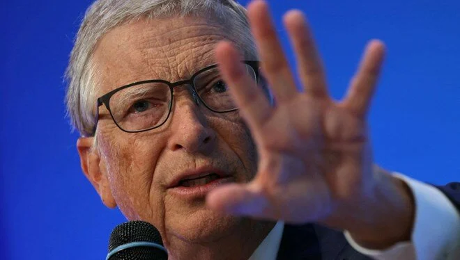

Microsoft'un kurucu ortağı Bill Gates, kendi podcast yayınında yapay zekanın geleceği ve muhtemel
tehditleri hakkında konuştu. Gates, yapay zeka ile iş birliği içinde olmanın öneminden bahsederken
gelecekte yapay zekanın insanların elinden alamayacağını düşündüğü işlerden bahsetti.
Microsoft'un kurucu ortağı Bill Gates, yapay zekanın sosyal faydaları konusunda her zaman iyimser
açıklamalarda bulundu. Ancak artık milyarder iş insanı bile yapay zekanın işini elinden alabileceğinden
endişeli.
Bill Gates, OpenAI CEO'su Sam Altman ile yakın zamanda bir podcast yayını kaydetti. İkili yapay zekanın
faydaları ve tehlikeleri hakkında konuştu."BEN BİLE İŞİMİ KAYBEDEBİLİRİM"
Gates yapay zekanın iş alanlarına etkisi hakkında konuşurken, "Ben bile işimi kaybedebilirim"
ifadelerini kullandı.
Bill Gates'in açıklamalarına göre, üniversiteye başlayacak gençler için en iyi üç kariyer planı:
alternatif enerji, sağlık biyobilimleri ve gelişen yapay zekanın kendisi ile bağlantılı alanlar.
Milyarder iş insanına göre bu üç alan yapay zekanın insanların elinden alamayacağı iş dalları.
YAPAY ZEKA İÇİN ÖNEMLİ SEKTÖRLER
Gates, 2024 öngörüleriyle ilgili bir paylaşımında, "Artık yapay zekanın ne tür işleri kendi başına
yapabileceğini ve hangilerinde yardımcı olarak hizmet edeceğini daha iyi anlıyoruz" ifadelerini
kullanmıştı.
Bill Gates sağlık hizmetleri ve alternatif enerji sektöründeki işlerin yapay zekanın geleceği için en
önemli ve uygulanabilir sektörler olduğunu söyledi.